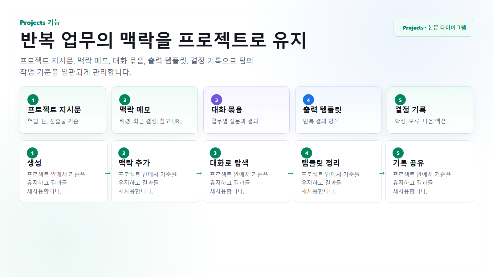

반복 보고
주간 보고, 운영 리뷰, 프로젝트 업데이트처럼 형식이 반복되는 업무에 적합합니다.
Projects
Projects는 특정 업무나 주제의 대화를 묶고, 반복되는 지시와 기준을 유지하는 데 유용합니다. 파일 첨부 없이 운영할 때는 프로젝트 지시문, 맥락 메모, 결정 기록을 텍스트로 관리합니다.

프로젝트를 파일 저장소처럼 쓰지 않습니다. 문서 원본은 사내 저장소에 두고, ChatGPT에는 요약 맥락과 필요한 발췌만 텍스트로 제공합니다.
주간 보고, 운영 리뷰, 프로젝트 업데이트처럼 형식이 반복되는 업무에 적합합니다.
용어, 톤, 품질 기준, 금지 표현을 프로젝트 지시문에 넣어 일관성을 유지합니다.
주제별 리서치 질문, 발견한 출처, 결정사항을 대화 단위로 이어갑니다.
구조
| 구성 요소 | 넣을 내용 | 첨부 없이 쓰는 방식 |
|---|---|---|
| 프로젝트 지시문 | 역할, 톤, 산출물 형식, 보안 주의점 | “주간 런칭 리스크 리뷰”처럼 프로젝트 목적, 기본 표 형식, 금지 표현을 고정합니다. |
| 맥락 메모 | 현재 상황, 이해관계자, 최근 결정, 참고 URL | 제품명은 B제품, 고객명은 A사처럼 가명 처리하고 최근 결정 5개만 요약해 둡니다. |
| 대화 스레드 | 업무별 질문과 결과 | “고객 공지 초안”, “QA 재테스트 범위”, “영업 FAQ”처럼 산출물별로 대화를 나눕니다. |
| 결정 기록 | 확정 사항, 보류 사항, 다음 액션 | 답변 끝에 날짜, 결정, 담당자, 근거, 다음 확인 질문을 결정 로그로 남기게 합니다. |
운영 루틴
팀 전체가 아니라 반복 업무 단위로 프로젝트를 만듭니다.
잘 맞는 출력 형식과 금지 조건이 생기면 프로젝트 지시문에 반영합니다.
긴 대화는 결정사항, 남은 질문, 다음 액션으로 요약해 새 대화의 출발점으로 씁니다.
복사해서 쓰기
이 프로젝트의 목적: B제품 출시 전 리스크, 고객 공지, QA 재테스트 액션을 한 곳에서 관리
주요 사용자: PM, QA 리드, 법무 담당자, 고객지원 리드
반복 산출물:
- 주간 리스크 리뷰 표
- 고객 공지 초안
- QA 재테스트 체크리스트
- 영업/고객지원 FAQ
파일 첨부는 사용하지 않는다. 사용자가 붙여넣은 텍스트, 공개 URL, 직접 요약한 맥락만 근거로 작업한다.
항상 지킬 기준:
- 고객명은 A사/B사, 제품 내부 코드는 B제품처럼 가명 처리
- 미확정 일정과 수치는 “확인 필요”로 표시
- 법무/보안 판단이 필요한 문장은 별도 열에 표시
- 결과는 바로 업무 문서에 옮길 수 있게 표 또는 bullet로 작성
기본 출력 형식:
1. 이번 요청의 핵심 요약 5줄
2. 결정사항 / 보류사항 / 담당자 / 마감 / 근거 표
3. 리스크와 반론
4. 다음 액션과 추가 질문